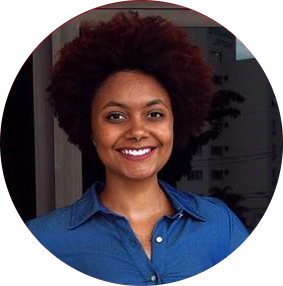
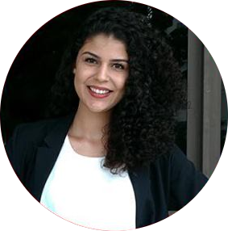
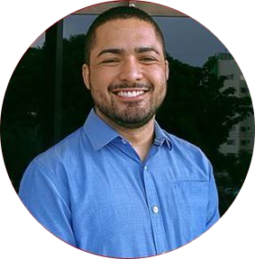
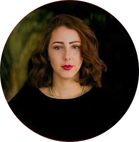
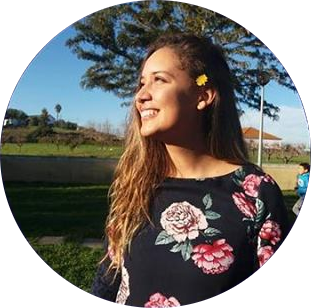
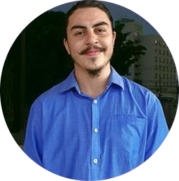
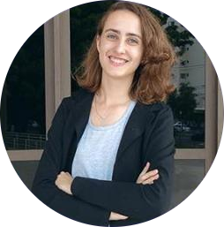
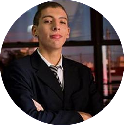

Criado em 2009 na Universidade Federal de Uberlândia, o grupo de manteve inativo até o ano de 2016, quando o processo de internacionalização da cidade volta de forma expoente devido à implementação do “Conselho de Desenvolvimento Econômico de Uberlândia 2100” em 2015 e sua câmara técnica específica de Atração de Investimento e Cooperação Internacional. Sendo esta câmara técnica dividida em 4 eixos: negócios, governo, sociedade e academia, o GEUCI se inseriu indiretamente no último deles, realizando levantamentos de dados da própria UFU na área de mobilidades internacionais. Em 2018, o grupo se insere diretamente nesse processo, participando das reuniões e planejamentos.
Diante disso o grupo enxerga a necessidade de lidar com os demais setores da sociedade, abrangendo assim suas áreas de atuação e incorporando a mesma divisão da câmara técnica em sua organização interna ainda no mesmo ano. Como forma de oficializar suas ações para além da universidade, se torna parte do projeto de extensão denominado “Uberlândia no Contexto Internacional”. A partir de então, lida com objetivos como: mediar negócios internacionais da cidade, intensificar o fluxo de estudantes UFU-exterior e vice-versa, envolver a comunidade no processo de internacionalização e continuar atuando junto ao CODEN.
Nossa Equipe
Diretoria
Em vista de tornar os projetos do GEUCI exequíveis, é necessário uma equipe responsável e dedicada. Para isso, contamos com os cargos de presidência e vice presidência.
Ambas as participantes abaixo contribuíram para a produção de relatórios e projetos em parceria com o Conselho de Desenvolvimento Econômico da cidade de Uberlândia, com a Diretoria de Relações Internacionais da UFU e com o SEBRAE com o intuito de promover a internacionalização da cidade de Uberlândia.
 Diandra Schatz PRESIDENTE Atual presidente do grupo, é estudante do sétimo período de Relações Internacionais e se dedica ao grupo desde 2016.
 Laura Hemilly VICE-PRESIDENTE Também cursa o sétimo período de Relações Internacionais e se dedica ao grupo desde 2016, ocupando até recentemente o cargo de presidente.
Eixo Academia
O eixo academia tem como intuito intensificar o intercâmbio de estudantes, por meio da coleta e análise de dados e do engajamento com outras universidades.
 Vinicius Ariel COORDENADOR Estudante do quarto período de Relações Internacionais, contribui com a consolidação do GEUCI por meio da produção de relatórios desde 2017.
 Laura Couto CONSULTORA Mestranda em Relações Internacionais pelo PPGRI-UFU, participa do grupo desde 2018 e contribuiu para a estruturação do projeto do eixo academia.
Eixo Governo
O eixo governo tem a pretensão de atuar diretamente no processo de internacionalização de Uberlândia, através da coleta e análise de dados e do estabelecimento de parcerias.
Hanna Issa COORDENADORA Coordenadora do eixo, é estudante do sétimo período do curso de Relações Internacionais e contribui com o GEUCI desde 2017.
Mariana Seyfried CONSULTORA Mestranda no Programa de Pós Graduação em Relações Internacionais da Universidade Federal de Uberlândia, vem colaborando para o crescimento do GEUCI desde 2017.
Eixo Sociedade
O eixo sociedade intenta envolver a população uberlandense no processo de internacionalização da cidade, por meio de eventos, projetos e redes sociais.
 Daniella Alves COORDENADORA Participa do GEUCI desde 2017 e foi a responsável por criar o projeto do eixo sociedade, estruturando o mesmo em prol de uma aproximação da comunidade da cidade de Uberlândia do processo de internacionalização.
Eixo Negócios
O eixo negócios pretende contribuir na mediação de negócios internacionais na cidade, através da coleta e análise de dados, serviços de consultoria e análise de mercados.
 Paulo Cézer COORDENADOR Estudante de Relações Internacionais e membro do GEUCI desde 2018, faz a gestão das atividades do Eixo Negócios.
 Moara Vieira CONSULTORA Estudante de Administração e participante do grupo desde 2018, auxilia o coordenador em suas tarefas.
 João Pedro Gurgel CONSULTOR Estudante de Relações Internacionais e membro do grupo desde 2019, auxilia junto com os demais na coordenação do eixo.

Localização
Nos localizamos no endereço abaixo:
Av. xxx yyy zzz
Bairro ABC DEF
123 ASD QWERTY